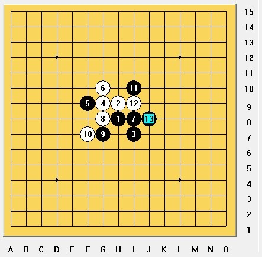

血拼…苦战
#1 血拼…苦战 作者：茗弈求学 发表时间：2010-1-15 18:49:03
今天下午有幸看到小刀与苦战二位高手之间的颠峰对决，惊心动魄之余，小弟斗胆来略评一二
黑布局斜月，白 6 据说是最强防守，黑 7 是针对白棋设下的一个一个圈套，如果白棋盲目活 3 （如图 1 ），则白棋处处被牵制，黑棋形势大好。实战的白 10 机敏，借助黑棋的禁点来展开进攻，黑棋一直稳健防守。 25? 黑棋局部形成进攻， 26 好棋 ! 把黑棋压迫的局部，同时形成了自己的进攻， 27 被逼转为防守。
 图1

白棋得势不饶人，
28
，
30
不起眼地做了
2
/*760*90，创建于2012-2-9*/ var cpro_id = 'u761865';
#2 Re:血拼…苦战 作者：小帮帮 发表时间：2010-1-15 19:01:55
看不到图
#3 Re:血拼…苦战 作者：茗弈宽容 发表时间：2010-1-15 19:31:17
谢谢冥弟弟！这盘棋有2个地方比较关键，27是为了压缩白的空间，不知道是否还有更好的点？31手稍弱，如果31档在左边那么和29活2，黑左下子力比较多，白要应，所以在左边更积极些；31之后白开始反击，41通过进攻来交换，44这里表面阵势强，其实是纸老虎，不出所料，苦战45没上当，反杀！全盘亮点！48直接防不住了，必须先充控制黑的眠三再回来防这个点。57也较强手段，无奈没有能够连续进攻可借用的好子力。66手后黑彻底没机会了，本该和棋，苦战不肯，最后67下了晕招，承让一盘。很久没有这么认真下棋了，这盘棋最近比较满意的一盘吧。还请各位老师朋友们指点一二为感。#4 Re:血拼…苦战 作者：静待花开 发表时间：2010-1-15 20:45:39
精彩！学习了。